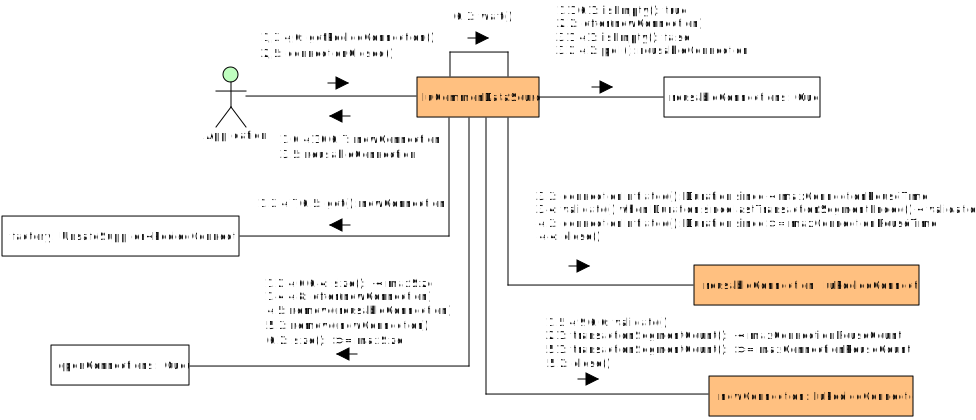

java.lang.Object
edu.iu.jdbc.pool.IuCommonDataSource
- All Implemented Interfaces:
AutoCloseable,EventListener,CommonDataSource,ConnectionEventListener
public abstract class IuCommonDataSource
extends Object
implements CommonDataSource, ConnectionEventListener, AutoCloseable
Abstract common database connection pool implementation.
May be overridden to implement DataSource or XADataSource and
integrate with an application runtime environment.
- See Also:
-
Constructor Summary
ConstructorsModifierConstructorDescriptionprotectedIuCommonDataSource(edu.iu.UnsafeSupplier<? extends PooledConnection> factory) Default constructor. -
Method Summary
Modifier and TypeMethodDescriptionvoidclose()Waits for completion and closes all open connections.voidconnectionClosed(ConnectionEvent event) voidGets the maximum length of time a connection can be checked out from the pool before attempting to forcibly close and consider it abandoned.intGets the number of open connections immediately available for reuse.intlongGets the maximum number of times a single connection can be used before ejecting from the pool.Gets the maximum length of time a single connection can remain open before ejecting from the pool.intGets the maximum number of times a connection attempt will be retried before resulting in failure.intGets the maximum number of connections to allow in the pool.intgetOpen()Gets a count of all open connections in the pool.Checks out aPooledConnection.Gets the database schema used to initialize the downstream connection factory.Gets the maximum length of time to wait for all connections to close on shutdown.getUrl()Gets the URL used to initialize the downstream connection factory.Gets the database username used to initialize the downstream connection factory.Gets the frequency at which to validate connections, whengetValidationQuery()returns a non-null value.Gets the query to use for validating connections on creation, and intermittently before checking out from the pool.booleanisClosed()Determines whether or not this database pool is closed.voidsetAbandonedConnectionTimeout(Duration abandonedConnectionTimeout) Sets the maximum length of time a connection can be checked out from the pool before attempting to forcibly close and consider it abandoned.voidsetConnectionInitializer(edu.iu.UnsafeFunction<Connection, Connection> connectionInitializer) Sets an optional transform function to be apply directly before checking out a connection from the pool.voidsetLoginTimeout(int seconds) voidsetLogWriter(PrintWriter out) voidsetMaxConnectionReuseCount(long maxConnectionReuseCount) Sets the maximum number of times a single connection can be used before ejecting from the pool.voidsetMaxConnectionReuseTime(Duration maxConnectionReuseTime) Gets the maximum length of time a single connection can remain open before ejecting from the pool.voidsetMaxRetry(int maxRetry) Gets the maximum number of times a connection attempt will be retried before resulting in failure.voidsetMaxSize(int maxSize) Sets the maximum number of connections to allow in the pool.voidsetOnClose(edu.iu.UnsafeRunnable onClose) Sets an optional shutdown hook to be invoked fromclose()after all physical connections managed by the pool have been closed.voidSets the database schema used to initialize the downstream connection factory.protected voidsetShutdownTimeout(Duration shutdownTimeout) Sets the maximum length of time to wait for all connections to close on shutdown.voidSets the URL used to initialize the downstream connection factory.voidsetUsername(String username) Sets the database username used to initialize the downstream connection factory.voidsetValidationInterval(Duration validationInterval) Sets the frequency at which to validate connections, whengetValidationQuery()returns a non-null value.voidsetValidationQuery(String validationQuery) Sets the query to use for validating connections on creation, and intermittently before checking out from the pool.toString()Methods inherited from class java.lang.Object
clone, equals, finalize, getClass, hashCode, notify, notifyAll, wait, wait, waitMethods inherited from interface javax.sql.CommonDataSource
createShardingKeyBuilder
-
Constructor Details
-
IuCommonDataSource
Default constructor.- Parameters:
factory-UnsafeSupplierof downstreamPooledConnectioninstances; eachUnsafeSupplier.get()invocation must return a newly established physical database connection.
-
-
Method Details
-
getPooledConnection
Checks out aPooledConnection. Implementation Note: The upstream
DataSourceimplementation should discard this instance once the logicalConnectionview has been obtained. Application code will invokeConnection.close()to return the connection to the pool to be reused or retired. Note that invokingPooledConnection.close()will close the physical connection and remove it from the pool. This facilitates ejecting physical connections by an upstream pool manager.- Returns:
PooledConnection- Throws:
SQLException- if the connection fails due to a database error
-
connectionClosed
- Specified by:
connectionClosedin interfaceConnectionEventListener
-
connectionErrorOccurred
- Specified by:
connectionErrorOccurredin interfaceConnectionEventListener
-
getParentLogger
- Specified by:
getParentLoggerin interfaceCommonDataSource
-
getLogWriter
- Specified by:
getLogWriterin interfaceCommonDataSource- Throws:
SQLException
-
setLogWriter
- Specified by:
setLogWriterin interfaceCommonDataSource- Throws:
SQLException
-
setLoginTimeout
- Specified by:
setLoginTimeoutin interfaceCommonDataSource- Throws:
SQLException
-
getLoginTimeout
public int getLoginTimeout()- Specified by:
getLoginTimeoutin interfaceCommonDataSource
-
isClosed
public boolean isClosed()Determines whether or not this database pool is closed.- Returns:
- true if closed; else false
-
getAvailable
public int getAvailable()Gets the number of open connections immediately available for reuse.- Returns:
- number of open connections immediately available for reuse
-
getOpen
public int getOpen()Gets a count of all open connections in the pool.- Returns:
- count of all open connections
-
getUrl
Gets the URL used to initialize the downstream connection factory.- Returns:
- Full JDBC URL
-
setUrl
Sets the URL used to initialize the downstream connection factory.- Parameters:
url- Full JDBC URL
-
getUsername
Gets the database username used to initialize the downstream connection factory.- Returns:
- Database username
-
setUsername
Sets the database username used to initialize the downstream connection factory.- Parameters:
username- Database username
-
getSchema
Gets the database schema used to initialize the downstream connection factory.- Returns:
- Database schema
-
setSchema
Sets the database schema used to initialize the downstream connection factory.- Parameters:
schema- Database schema
-
getMaxSize
public int getMaxSize()Gets the maximum number of connections to allow in the pool.- Returns:
- Pool max size
-
setMaxSize
public void setMaxSize(int maxSize) Sets the maximum number of connections to allow in the pool.- Parameters:
maxSize- Pool max size
-
getMaxRetry
public int getMaxRetry()Gets the maximum number of times a connection attempt will be retried before resulting in failure.- Returns:
- maximum number of times a connection attempt will be retried before resulting in failure.
-
setMaxRetry
public void setMaxRetry(int maxRetry) Gets the maximum number of times a connection attempt will be retried before resulting in failure.- Parameters:
maxRetry- maximum number of times a connection attempt will be retried before resulting in failure.
-
getMaxConnectionReuseCount
public long getMaxConnectionReuseCount()Gets the maximum number of times a single connection can be used before ejecting from the pool.- Returns:
- Per-connection max reuse count
-
setMaxConnectionReuseCount
public void setMaxConnectionReuseCount(long maxConnectionReuseCount) Sets the maximum number of times a single connection can be used before ejecting from the pool.- Parameters:
maxConnectionReuseCount- Per-connection max reuse count
-
getMaxConnectionReuseTime
Gets the maximum length of time a single connection can remain open before ejecting from the pool.- Returns:
- Per-connection max reuse time
-
setMaxConnectionReuseTime
Gets the maximum length of time a single connection can remain open before ejecting from the pool.- Parameters:
maxConnectionReuseTime- Per-connection max reuse time
-
getAbandonedConnectionTimeout
Gets the maximum length of time a connection can be checked out from the pool before attempting to forcibly close and consider it abandoned.- Returns:
- Abandoned connection timeout interval
-
setAbandonedConnectionTimeout
Sets the maximum length of time a connection can be checked out from the pool before attempting to forcibly close and consider it abandoned.- Parameters:
abandonedConnectionTimeout- Abandoned connection timeout interval
-
getShutdownTimeout
Gets the maximum length of time to wait for all connections to close on shutdown.- Returns:
- Maximum length of time to wait for all connections to close gracefully
-
setShutdownTimeout
Sets the maximum length of time to wait for all connections to close on shutdown.- Parameters:
shutdownTimeout- Maximum length of time to wait for all connections to close gracefully
-
getValidationQuery
Gets the query to use for validating connections on creation, and intermittently before checking out from the pool.- Returns:
- SQL select statement, must return a single row with a single non-null column; may be null to skip query validation
-
setValidationQuery
Sets the query to use for validating connections on creation, and intermittently before checking out from the pool.- Parameters:
validationQuery- SQL select statement, must return a single row with a single non-null column; may be null to skip query validation
-
getValidationInterval
Gets the frequency at which to validate connections, whengetValidationQuery()returns a non-null value.- Returns:
- Frequency at which to validate connections; may be
-
setValidationInterval
Sets the frequency at which to validate connections, whengetValidationQuery()returns a non-null value.- Parameters:
validationInterval- Frequency at which to validate connections; may be
-
setConnectionInitializer
public void setConnectionInitializer(edu.iu.UnsafeFunction<Connection, Connection> connectionInitializer) Sets an optional transform function to be apply directly before checking out a connection from the pool.- Parameters:
connectionInitializer-UnsafeFunction: accepts and returns aConnectionsuch thatWrapper.unwrap(Class)invoked on the return value delegates to theConnectionpassed as an argument; should not throw checked exceptions other thanSQLException; may throwTimeoutExceptionorInterruptedException.
-
setOnClose
public void setOnClose(edu.iu.UnsafeRunnable onClose) Sets an optional shutdown hook to be invoked fromclose()after all physical connections managed by the pool have been closed.- Parameters:
onClose-UnsafeRunnable
-
close
Waits for completion and closes all open connections.- Specified by:
closein interfaceAutoCloseable- Throws:
SQLException
-
toString
-